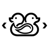
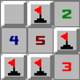
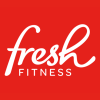

hermannm.dev
Hello there! I'm Hermann, a Computer Science student at NTNU Trondheim. I mostly do web development (frontend and backend) and some hobby game development. Below you can read about some of my projects, as well as places I've worked and studied.
Projects I've contributed to
indok-web

Languages:
Test
bfh-server & bfh-client
coffeetalk
corona-defense
minesweeper

gruvbox-plain
Places I've worked
Ignite Procurement
Norwegian University of Science and Technology (NTNU)
Fresh Fitness

Norlandia Care

In January 2018, during my last semester of high school, I started working part-time at Ullernhjemmet elderly care. I worked full-time for a few weeks the following summer, and came back again for the summer of 2019. The work mostly revolved around helping the elderly with all their needs, and keeping them company. Although a tough job at times, I think it made me more compassionate and caring.